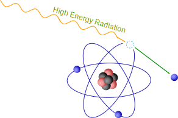
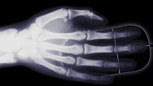
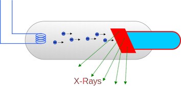

X-Rays and Gamma Rays
X-rays and Gamma Rays are high frequency electromagnetic radiation:

Energy and Ionization
Gamma rays, X-rays, and some ultraviolet waves have such high energy that they are ionizing, meaning they can knock electrons out of atoms.
This makes atoms charged and more likely to form new chemical reactions, which can be harmful to our cells, killing them or changing them so they grow out of control and form cancer.
X-Rays
X-rays have high energy and can pass through many materials, including our bodies!
Different materials absorb x-rays at different levels.
Example: Bones absorb X-rays more than muscles, so our skeleton shows up on an x-ray.

X-ray of a hand on a computer mouse
The x-ray plate gets darkened by the x-rays, so our bones appear whiter.
But X-rays are bad for us right? Yes, they are!
But an X-ray scan uses very little radiation, and the risks are small compared to the benefits of knowing what is inside our body when we are sick or injured.
People who work with x-rays every day need to be careful about their exposure. They must leave the room before running the x-ray and also wear lead aprons.
X-rays can also be used to scan bags and boxes to discover hidden item.
An X-ray of electronic equipment
Sources
The Sun sends out X-rays, but they are thankfully blocked by Earth's atmosphere.
We can make X-rays by having high energy electrons hit heavy metal objects such as tungsten:

Soft and Hard
There are "soft" and "hard" X-rays.
- Soft X-rays are between ultraviolet and gamma rays on the electromagnetic spectrum
- Hard X-rays are in the same region as gamma rays
Gamma Rays
Gamma rays have the highest energy , highest frequency and shortest wavelength in the electromagnetic spectrum.
Frequencies are greater than about 1018 Hz. That is 1,000,000,000,000,000,000 cycles per second. A fantastically high rate!
And wavelengths are less than 100 picometers. A picometer (pm for short) is one millionth of a millionth of a meter.
And the energy is enormous, about a million times the energy of light.
Whichever way you look at it, gamma rays are extreme.
Sources
Gamma rays are emitted from very high energy sources like neutron stars and pulsars
And also by lightning and radioactive decay.
The Sun also creates gamma rays but they don't escape from the Sun, except from solar flares.
Danger!
Gamma radiation causes damage to our cells. So gamma rays are dangerous, but also useful in special applications like killing cancer cells.